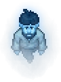

Yorick
| This article is a stub. You can help Graveyard Keeper Wiki by expanding it. |
| Yorick | |
|---|---|
 | |
Basic Information
| |
Location :
|
Morgue, Workyard |
Role :
|
Guide |

Yorick is a ghost resident of your graveyard. He will appear to you occasionally after sleeping. He is the one who explains the corpse rating system and the process for exhuming bodies. He whines a lot.
After you upgrade your church you can meet him near it in the night, where he will summon lightning onto your graveyard, damaging some graves.
Quests
Get rid of that guy!
After your first night in your bed, Yorick appears and asks you to exhume the corpse in the lower right corner of the graveyard and toss it into the river, claiming that they are a jerk and should be evicted from the graveyard.
Note: You can choose any corpse, as long as you throw it into the river.
After you dig up a corpse and throw it into the river, Gerry appears and scolds you for having done so. He tells you about where to burn corpses. This is better than throwing them into the river, as you get a
burial certificate for cremating them.
| Item | Notes |
|---|---|
| Exhumation permission |
Required to exhume corpses |
The following night, the ghost appears again and teaches you something about how to improve your  .
.
Other Cutscenes
Later, he shows up again and tells you he is now the concierge of new souls coming into the graveyard.
On a random night after the player reaches 100  , entering the graveyard will trigger an event where Yorick will summon lightning, randomly damaging a handful of graves, primarily targeting corpses that have 1 or more
, entering the graveyard will trigger an event where Yorick will summon lightning, randomly damaging a handful of graves, primarily targeting corpses that have 1 or more  . The event will still occur even if all buried bodies have only
. The event will still occur even if all buried bodies have only  .
.
Stranger Sins DLC
After the player builds the Barman Dummy, Yorick will possess it. This allows the player to begin hiring him to work at the Talking Skull Tavern, serving food and drinks.
Yorick will request that you put A mug of beer on the box shelves in the basement. It must be bronze level (no higher) to complete the task.
| |||||||||||||||||||||||||||||